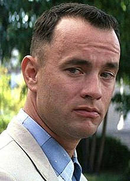

<!DOCTYPE html>
<html lang="en">

<head>
    <meta charset="utf-8" />
    <meta name="viewport" content="width=device-width, initial-scale=1, shrink-to-fit=no" />
    <meta name="description" content="" />
    <meta name="author" content="" />
    <title>Mapping Mahaweli</title>
    <!-- Favicon-->
    <link rel="icon" type="image/x-icon" href="assets/favicon.ico" />
    <!-- Core theme CSS (includes Bootstrap)-->
    <link href="css/styles.css" rel="stylesheet" />

    <link rel="stylesheet" href="https://unpkg.com/leaflet@1.9.4/dist/leaflet.css"
        integrity="sha256-p4NxAoJBhIIN+hmNHrzRCf9tD/miZyoHS5obTRR9BMY=" crossorigin="" />
    <!-- Make sure you put this AFTER Leaflet's CSS -->
    <script src="https://unpkg.com/leaflet@1.9.4/dist/leaflet.js"
        integrity="sha256-20nQCchB9co0qIjJZRGuk2/Z9VM+kNiyxNV1lvTlZBo=" crossorigin=""></script>

    <!-- Get the markercluster css too -->
    <link rel="stylesheet" href="https://unpkg.com/leaflet.markercluster@1.4.1/dist/MarkerCluster.css" />
    <link rel="stylesheet" href="https://unpkg.com/leaflet.markercluster@1.4.1/dist/MarkerCluster.Default.css" />
    <!-- Get the markercluster plugin too --->
    <script src="https://unpkg.com/leaflet.markercluster@1.4.1/dist/leaflet.markercluster-src.js"></script>
    <!-- Get the markercluster css too --->
    <link rel="stylesheet" href="https://unpkg.com/leaflet.markercluster@1.4.1/dist/MarkerCluster.css" />
    <link rel="stylesheet" href="https://unpkg.com/leaflet.markercluster@1.4.1/dist/MarkerCluster.Default.css" />
    <!-- Get the markercluster plugin too --->
    <script src="https://unpkg.com/leaflet.markercluster@1.4.1/dist/leaflet.markercluster-src.js"></script>

    <style>
        #map {
            position: absolute;
            height: 90vh;
            width: 100%;
        }
    </style>
    <meta charset="UTF-8">
    <meta name="viewport" content="width=device-width, initial-scale=1.0">
    <title>Forest Gump</title>
</head>

<body>
    <!-- Responsive navbar-->
   
    <!-- Header - set the background image for the header in the line below-->

    <body>
        <div id="map"></div>
        <script>
            var map = L.map('map').setView([32.69648282790673, -86.19992386941546], 8);
            baseLayer = L.tileLayer('https://api.maptiler.com/maps/bright-v2/{z}/{x}/{y}.png?key=9ZlnxkRt2oS8TwA1JdFu', {
                attribution: '<a href="https://urldefense.com/v3/__https://www.maptiler.com/copyright/__;!!HXCxUKc!yrj02Es_bfLohnOs-7AsYsKI8APsChfEDFGn2rfR5berko1KrewYCxgRcAoHDkq_-wz793PDA1INFjnenA$" target="_blank">&copy; MapTiler</a> <a href="https://urldefense.com/v3/__https://www.openstreetmap.org/copyright__;!!HXCxUKc!yrj02Es_bfLohnOs-7AsYsKI8APsChfEDFGn2rfR5berko1KrewYCxgRcAoHDkq_-wz793PDA1JDxvgR_g$" target="_blank">&copy; OpenStreetMap contributors</a>'
            });
            
            // Custom Marker 
            var iconOptions = {
                iconUrl: 'img/black.png',
                iconSize: [40, 55]

            }
            var customIcon = L.icon(iconOptions);
            var markersOptions = {
                icon: customIcon
            }

            var iconOptions = {
                iconUrl: 'img/houseicon.png',
                iconSize: [50, 55]
            }

            var customIcon = L.icon(iconOptions);
            var markerOptions = {
                icon: customIcon
            }


            //Dams
            var Polgolla = L.marker([32.85142325029941, -81.07931629401318], markersOptions).bindPopup('<p> sample text_Forrest Gump was a box office hit and won six awards at the 1995 Oscars, including Best Picture, Best Director and Best Actor for Hanks. Many fans also wonder if Forrest Gump is based on a true story since it incorporates so many real events throughout history. The short answer, however, is no..(Source: Sunday Observer)</p>');
            var victoria = L.marker([7.24157111500113, 80.78509992773945], markersOptions).bindPopup('<p>Victoria Dam: The dam generates power from three 67 MW turbines, with a total installed capacity to 201 MW, making it the second largest hydroelectric power station in Sri Lanka. Construction on the dam began in August 1979 and was ceremonially completed in February 1985.</p>');
            var Rantembe = L.marker([7.199882636366756, 80.94961807260941], markersOptions).bindPopup('<p>Rantembe Dam: The dam generates power from three 67 MW turbines, with a total installed capacity to 201 MW, making it the second largest hydroelectric power station in Sri Lanka. Construction on the dam began in August 1979 and was ceremonially completed in February 1985.</p>');
            var Randenigala = L.marker([7.200214573509942, 80.92504223101183], markersOptions).bindPopup('<p>Randenigala Dam: The dam generates power from three 67 MW turbines, with a total installed capacity to 201 MW, making it the second largest hydroelectric power station in Sri Lanka. Construction on the dam began in August 1979 and was ceremonially completed in February 1985.</p>');
            var Maduruoya = L.marker([7.6483719015206715, 81.21445236815768], markersOptions).bindPopup('<p>Maduruoya Dam: The dam generates power from three 67 MW turbines, with a total installed capacity to 201 MW, making it the second largest hydroelectric power station in Sri Lanka. Construction on the dam began in August 1979 and was ceremonially completed in February 1985.</p>');
            var Moragahakanda = L.marker([7.6993000717719555, 80.77155557211229], markersOptions).bindPopup('<p>Moragahakanda Dam: The dam generates power from three 67 MW turbines, with a total installed capacity to 201 MW, making it the second largest hydroelectric power station in Sri Lanka. Construction on the dam began in August 1979 and was ceremonially completed in February 1985.</p>');

            // group dams 

            var dams = L.markerClusterGroup();
            dams.addLayers([Polgolla, victoria, Rantembe, Moragahakanda, Maduruoya, Randenigala]);

            // towns
            var Dehiattakandiya = L.marker([7.671482425543524, 81.04696078421763], markerOptions).bindPopup('<p>Dehiattakandiya is a town area that belongs the Mahaweli System C</p>');
            var Manampitiya = L.marker([7.90055482771435, 81.09569085826146], markerOptions).bindPopup('<p>Manampitiya is a town area that belongs to the Mahaweli System B</p>');
            var Aranaganwila = L.marker([7.769503846780168, 81.17458802546528], markerOptions).bindPopup('<p>Aranaganwila is a town area that belongs to the Mahaweli System B</p>');
            var Dimbulagala = L.marker([7.8592994449002465, 81.10583773963049], markerOptions).bindPopup('<p> Dimbulagala is a town area that belongs to the Mahaweli System C</p>');
            var Welikanda = L.marker([7.946037586681763, 81.2490837285569], markerOptions).bindPopup('<p> Welikanda is a town area that belongs to the Mahaweli System B</p>');
            var Giradurukotte = L.marker([7.462857951315692, 81.01730349022716], markerOptions).bindPopup('<p> Giradurukotte is a town area that belongs to the Mahaweli System C</p>');
            var Laggala = L.marker([7.5516543781450665, 80.77109816098874], markerOptions).bindPopup('<p> Welikanda is a town area that belongs to the Mahaweli System C</p>');
            var Thalawa = L.marker([8.23622270452126, 80.35218074122902], markerOptions).bindPopup('<p> Thalawa is a town area that belongs to the Mahaweli System H</p>');
            var Nochchiyagama = L.marker([8.292730461525844, 80.22470025109664], markerOptions).bindPopup('<p> Nochchiyagama is a town area that belongs to the Mahaweli System H</p>');
            var Meegalewa = L.marker([8.055852344791385, 80.35344580026985], markerOptions).bindPopup('<p> Meegalewa is a town area that belongs to the Mahaweli System H</p>');
            var Galnewa = L.marker([8.03717386710299, 80.4729594170907], markerOptions).bindPopup('<p> Galnewa is a town area that belongs to the Mahaweli System H</p>');
            var Thambuththegama = L.marker([8.184313109428599, 80.29330813077277], markerOptions).bindPopup('<p> Thambuththegama is a town area that belongs to the Mahaweli System H</p>');
            var Bakamuna = L.marker([7.780602960472688, 80.81836947141291], markerOptions).bindPopup('<p> Bakamuna is a town area that belongs to the Mahaweli System G</p>');
            var Sooriyawewa = L.marker([6.319632713154766, 81.0051654722853], markerOptions).bindPopup('<p> Sooriyawewa is a town area that belongs to the Mahaweli System Udawalawa</p>');
            var Digana = L.marker([7.294659711638938, 80.73723784973753], markerOptions).bindPopup('<p> Digana is a town area that belongs to the Mahaweli System E/Victoria</p>');
            var Padiyathalawa = L.marker([7.392006407718639, 81.24196496841793], markerOptions).bindPopup('<p> Padiyathalawa is a town area that belongs to the Mahaweli System Rambaken Oya</p>');
            var MahaOya = L.marker([7.531412825821067, 81.34549875143706], markerOptions).bindPopup('<p> Maha Oya is a town area that belongs to the Mahaweli System Rambaken Oya</p>');
            var Embilipitiya = L.marker([6.316320616693455, 80.84444021223726], markerOptions).bindPopup('<p> Embilipitiya is a town area that belongs to the Mahaweli System Udawalawa</p>');
            var Palugaswewa = L.marker([8.060672530112987, 80.68977320123501], markerOptions).bindPopup('<p> Palugaswewa is a town area that belongs to the Mahaweli System Huruluwewa</p>');
            var Galkiriyagama = L.marker([7.936893700063177, 80.56623481259133], markerOptions).bindPopup('<p> Galkiriyagama is a town area that belongs to the Mahaweli System Huruluwewa</p>');

            // group dams 
            var Towns = L.markerClusterGroup();
            Towns.addLayers([Dehiattakandiya, Manampitiya, Aranaganwila, Dimbulagala, Welikanda, Giradurukotte, Laggala, Thalawa, Nochchiyagama, Meegalewa, Galnewa, Thambuththegama, Bakamuna, Sooriyawewa, Digana, Padiyathalawa, MahaOya, Embilipitiya, Palugaswewa, Galkiriyagama]);

            // Map baseLayer
            var baseMaps = {
                "Mahaweli Constructions": baseLayer
            }

            //Map Overlays
            var overlayMaps = {
                "Dams constructed under the AMDP": dams,
                "Town Centers established under the AMDP": Towns
            };

            // layer control added to map
            var layerControl = L.control.layers(baseMaps, overlayMaps).addTo(map);

            //set the base layer as the default layer
            baseLayer.addTo(map);

        </script>

    </body>

</html>